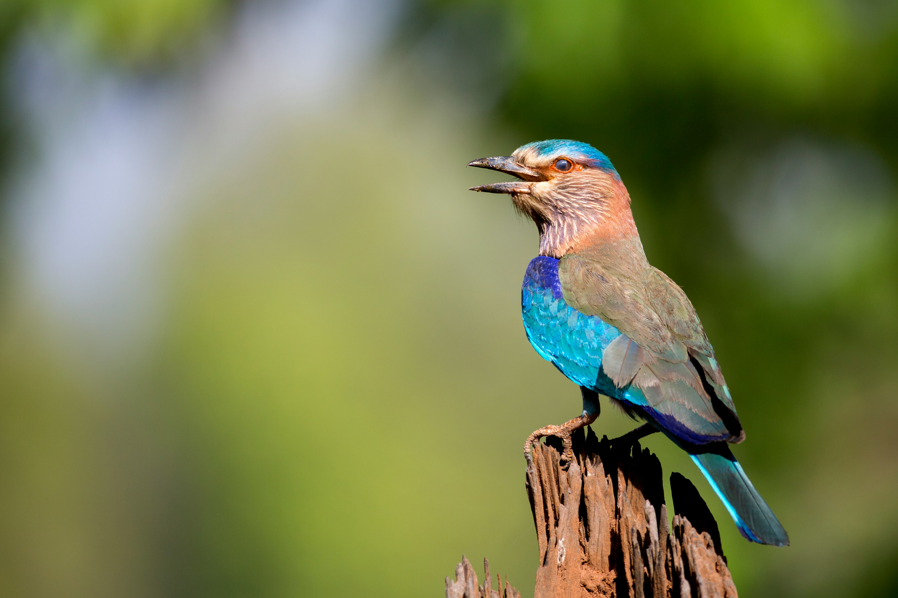

The Indian Roller is a striking blue and brown bird commonly seen perched on wires, poles, trees, and other exposed locations. Its wings display brilliant shades of blue when it flies, making it especially spectacular in flight. It hunts insects and small animals from a perch and is common in open country, farmland, grassland, and urban areas. During courtship and territorial disputes, it performs dramatic rolling and tumbling flights. Compared with the similar Common Hoopoe, it is distinguished by the combination of features described above. Its preference for open woodland, farmland, grassland, roadside areas, and towns also helps separate it from species that use different habitats. Its characteristic behaviour, including perches in exposed locations and drops down to capture prey from the ground, provides another useful field clue. Taken together, these differences make it easier to distinguish from similar species when the bird is seen clearly.